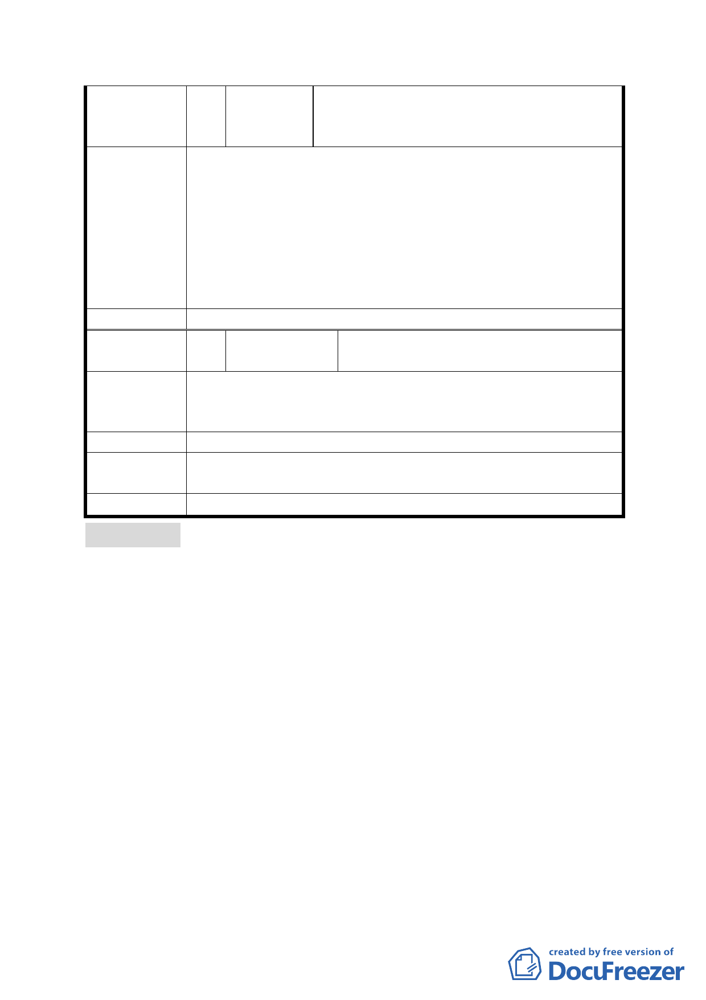

陳情理由
委員會決議
編號
陳情理由
建議辦法
市府修正後
回應說明
委員會決議
特助鄧萍、阮昭雄議員代表溫凱州、林奕
華議員服務處主任林明珠(101.12.27 本
會第 641 次委員會議中發言要點)
1. 本案因地方 NGO 團體希望軍方整體搬遷作為滯洪公園，
也因為地方 NGO 團體對整體環境的努力，讓軍方再退讓
出 30 米的空間作防洪調節池，但本案下游淹水已造成
地方居民的損失慘重，且軍方搬遷非短期可達成，故贊
同本案計畫儘速通過，防洪調節池應盡快做。
2. 未來市府進行防洪調節池的施工設計時，應盡量融入地
方 NGO 團體的提案，儘量達到生態滯洪公園的構想。
3. 計畫區內地主的權益儘可能顧及。
本案依市府本次會議所送資料修正後通過。
51 陳情人
臺北市議會李傅中武 (101.12.27 本
會第 641 次委員會議中發言)
本案計畫區興德路東側變更學校用地為保護區，嚴重損及民
眾權益，建議擴大公園及防洪調節池用地範圍，以顧及地主
權益。
同編號 47。
同意依「市府修正後回應說明」辦理
審議事項三
案名：劃定臺北市北投區振興段一小段 173 地號（部分）及 179
地號（部分）等 2 筆土地（天母樺園社區）為更新地區
案情概要說明：
一、本更新地區位於北投區明德路以西、明德路 267 巷以南、榮
華三路 24 巷以東、榮華三路以北所圍街廓範圍內，面積 1123
平方公尺。本更新地區土地使用分區為第三種住宅區，土地
及建物權屬均為私有。
二、本案範圍內計有 1 棟 7 層樓建築物，經市府 96 年 5 月 23 日
發函認定為高氯離子混凝土建築物，市府 99 年 4 月 16 日公
告劃定為更新單元，並於 99 年 8 月 20 日函告所有權人，該
建築物「具潛在危險性，建議拆除重建」，應於 101 年 7 月
29 日前停止使用，於 102 年 7 月 29 日前協調全棟住戶自行
- 44 -